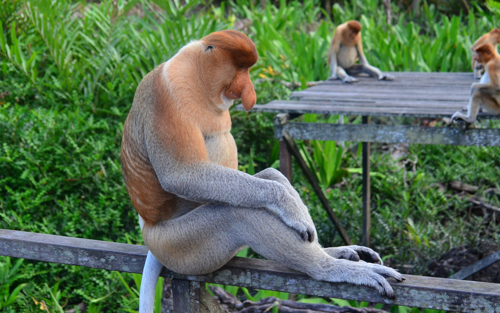
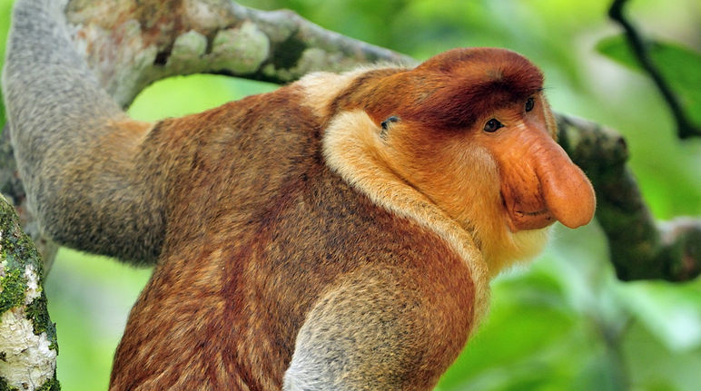

Sobre

A dieta desta espécie é basicamente folívora. Isto é, seu alimento favorito são as folhas.
No entanto, também foi possível observar a ingestão sazonal
de algumas frutas verdes, que precedem as maduras, uma vez que estas podem fermentar de forma acelerada
nos seus estômagos e causar cólica, distensão abdominal
e mal-estar geral.
A preferência por comer folhas como alimento principal
lhes dá vantagens em relação a alguns primatas de outras espécies. Isso porque eles podem viver nas copas
das árvores sem arriscar demais a sua segurança diante de possíveis predadores.
Além disso, eles também consomem
flores e sementes, alguns grãos, nozes, larvas e pequenos insetos, o que representa
uma dieta variada e equilibrada.
Embora em sua fisionomia não seja possível perceber a barriga proeminente que esses primatas ostentam, esta é outra de suas características únicas. Ela constitui um quarto do seu peso corporal.

As fêmeas dos macacos -narigudos dão à luz apenas um filhote de cada vez. O período de gestação dura cerca de cinco meses e meio.
Quando nascem, os pequenos narigudos têm o rosto azul, quase preto, mas isso muda à medida que eles se aproximam dos quatro meses de vida. O bebê fica com a mãe até que ela tenha
outro bebê ou até completar um ano de vida.
A maturidade sexual é atingida entre os quatro e os cinco anos, embora as fêmeas a alcancem antes. O tamanho considerável de seu nariz é seu principal atrativo
no momento do acasalamento. Em geral, ele está relacionado à força e à virilidade.
Os narizes maiores proporcionam gritos mais intensos, pois eles atuam como uma caixa de ressonância. Isso serve para comunicar ao grupo as ações a serem tomadas em caso de ameaça.